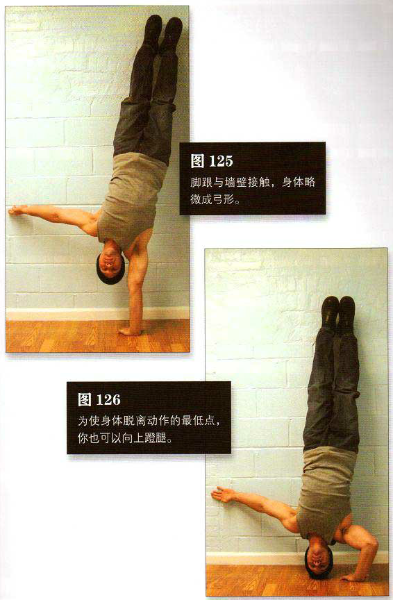

蹬起靠墙成倒立姿势，向一侧略微倾斜，直到仅用单臂支撑身体的全部重量，就像单臂半倒立撑（第八式）中那样。脚跟与墙壁接触，身体略微成弓形。这是该动作的起始姿势（图125）。弯曲支撑身体的那只手臂，直到头顶轻轻接触地面。另一只手臂则要随时做好准备，以便失误时可以助你一臂之力。这是该动作的结束姿势（图 126）。在将身体推回到起始姿势的过程中，可能需要用些爆发力。为使身体脱离动作的最低点，你也可以向上蹬腿：双膝弯曲（脚跟依然要接触墙壁）并迅速伸直，这样可以增加一些向上的冲力。
初级标准：1 组，1 次（每侧）
中级标准：2 组，各 2 次（每侧）
高级标准：1 组，5 次（每侧）